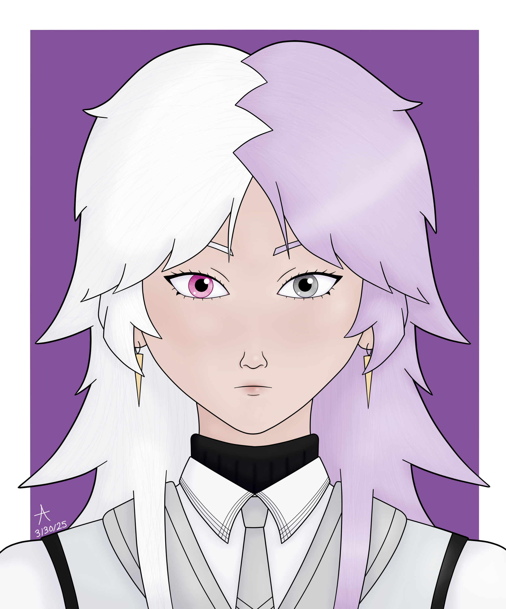
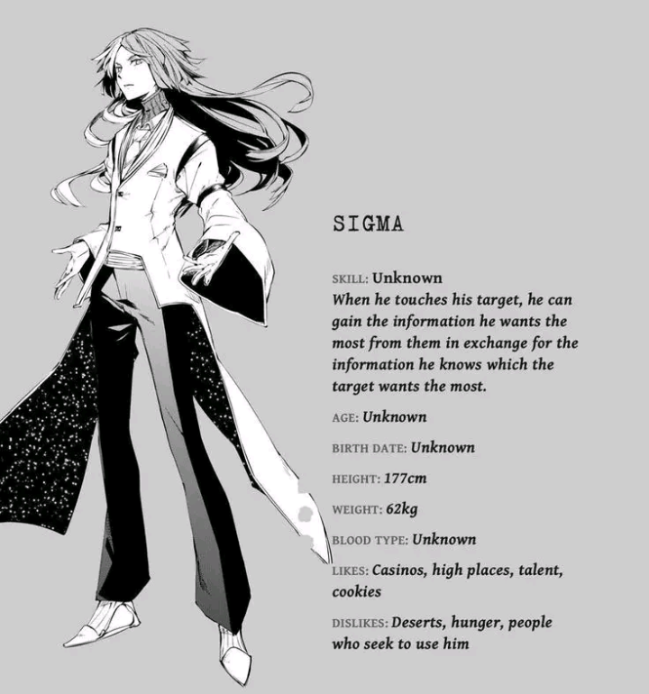

About Me
- You can call me Aethyx (pronounced 'ee-thicks'), Aether, Aeth, or Angel!
- I'm an angel from space diguising myself as human and living amongst humans to learn more about them! I got lucky enough to find a human I really like, though he seems quite different from other humans, despite how normal and ordinary he claims to be... I learned how to use human computers and code so I could make this website as a love letter to him and our relationship/a digital scrapbook!
- they/he/ae/it/wing/star
- Gay trans femboy (nonbinary, demiboy, demiangelgender)
- Age: 24 (in human years)
- Birthday: March 26th
- Aries, INFP
- Height: 5'5"
- Species: angel (disguises self as human most of the time)
- Favorite colors: green, pink, lilac
- Representative color: dark orchid #5C007D
- Representative animal: fox
- Representative flower: orchid
- Representative emojis: shooting star, angel
- Likes: my sweet Siggy, anime & video games, figure collecting, selfshipping, cats, reptiles, bugs, J-fashion, Vocaloid music, space, baking, cooking, drawing, cosplay, angels, sushi, anthropology, YouTube, plushies, cute things
- Anxiety, depression, panic disorder, DPDR, chronic pain, trauma, autism, ADHD, poor memory, RSD, health anxiety
- Romantic Sigma (Bungou Stray Dogs) yume (nonsharing)
- Platonic Nissem (Tetote Connect) yume
- Platonic Calne Ca (Vocaloid/Miku derivative) yume
- Platonic Arcee (Transformers) yume
- Kin list: Ranpo, Atsushi, & Dazai from BSD; Ame from Needy Girl Overdose; Basil from Omori; Mae from Night in the Woods; Rika Kawai from Wonder Egg Priority; Mizuki & Ena from Project Sekai; Milk-chan from Milk Inside a Bag of Milk Inside a Bag of Milk; Ryoma Hoshi from DRV3
About Sigma



- he/him
- Gay cis man
- Age: 23
- Birthday: March 4th
- Pisces, ENFJ
- Height: 5'9"
- Species: human
- Favorite color: royal purple
- Representative color: light lilac #DAC6E2
- Representative animals: rabbit, sheep
- Representative flower: lilac
- Representative emojis: slot machine, cookie
- Likes: Aeth, casinos, high places, talent, cookies, baking, nature
- Anxiety, autism, trauma
About Our Relationship

- THE COUPLE OF ALL TIME!!!!!!!!1!!111!!!!!
- VERY EXTREMELY selective sharing
- Anniversary date: 7/11/24
- Ship names: SigAeth, Star Slots, Angel Cookies
- Relationship status: dating (for marriage UwU)
- True soulmates <3